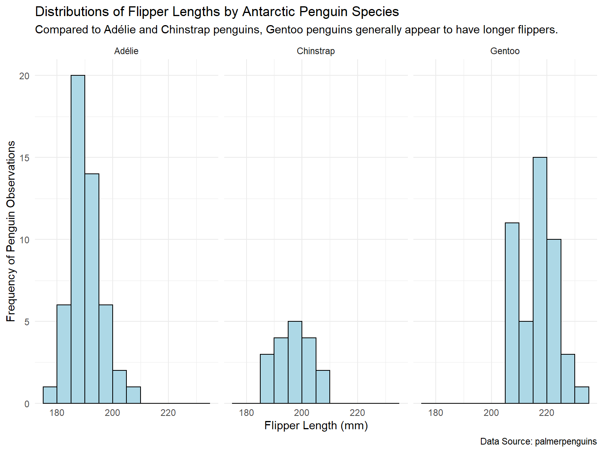
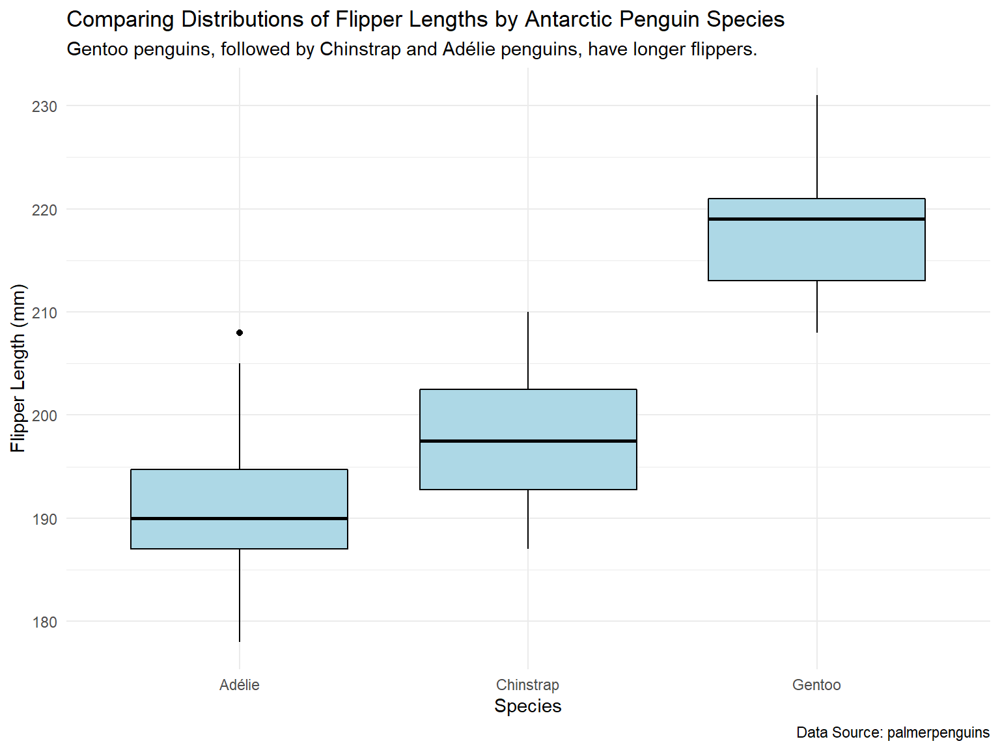
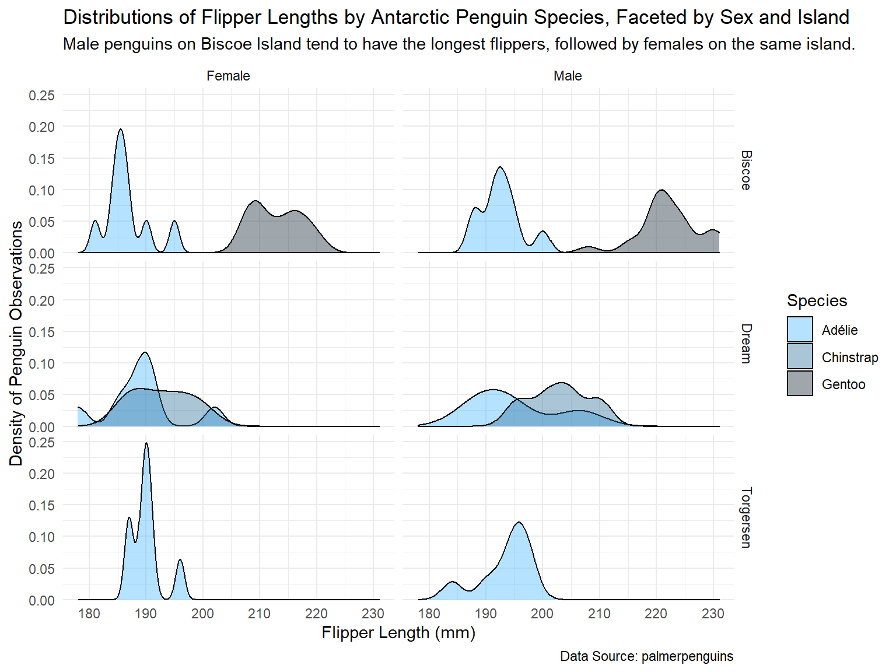

# Load the tidyverse
library(tidyverse)
# Load the `penguins` dataset
penguins <- palmerpenguins::penguinsExample analysis
Background
Question
How do flipper lengths compare across three penguin species (i.e., Adélie, Chinstrap, and Gentoo) observed on three different islands in the Palmer Archipelago of Antarctica in 2008?
Audience
The intended audience for this data analysis is anyone who is interested in exploring data about Antarctic penguins’ flipper measurements with R.
Original Data
The original data in this analysis is the penguins dataset from the palmerpenguins package (Horst, Hill, and Gorman 2020). This dataset contains size measurements of adult foraging penguins near the Palmer Station in Antarctica.
Description
According to the palmerpenguins package’s documentation, data was collected on three different penguin species and released by Dr. Kristen Gorman and the Palmer Station, Antarctica LTER. All of the observations were recorded in 2007-2009 and originally published in 2014 (Gorman, Williams, and Fraser 2014).
Data Dictionary
The documentation for the penguins dataset provides a comprehensive data dictionary.
Analysis
Setup
Setting Up for Success
First, we need to load the tidyverse set of packages (Wickham et al. 2019) and the penguins dataset.
The tidyverse is a collection of open source R packages built for data manipulation, exploration, and visualization.
More information can be found at https://www.tidyverse.org.
Data Wrangling
Wrangling Penguins
To wrangle the penguins dataset, we will primarily use the tidyverse packages, dplyr and tidyr.
Let’s clean up this dataset by:
removing all NAs,
filtering to only include observations from 2008,
replacing all observations spelled “Adelie” with “Adélie,”
capitalizing “male” and “female,” and
selecting only variables that are relevant to this analysis.
# Using `dplyr` and `tidyr` to wrangle `penguins`
wrangled_penguins <- penguins %>%
# Remove NA values from all columns
tidyr::drop_na() %>%
# Filter to only include observations from 2008
dplyr::filter(year == 2008) %>%
# Replace all "Adelie" values with "Adélie" and capitalize "male" and "female"
dplyr::mutate(dplyr::across('species', stringr::str_replace, 'Adelie', 'Adélie'),
sex = stringr::str_to_title(sex)) %>%
# Select only the species, island, flipper_length_mm, and sex variables
dplyr::select(species, island, flipper_length_mm, sex)
# Glimpsing this new, wrangled dataset
dplyr::glimpse(wrangled_penguins)Rows: 113
Columns: 4
$ species <chr> "Adélie", "Adélie", "Adélie", "Adélie", "Adélie", "A…
$ island <fct> Biscoe, Biscoe, Biscoe, Biscoe, Biscoe, Biscoe, Bisc…
$ flipper_length_mm <int> 186, 188, 190, 200, 187, 191, 186, 193, 181, 194, 18…
$ sex <chr> "Female", "Male", "Female", "Male", "Female", "Male"…Now, let’s quantitatively explore this dataset. Overall, what is the average flipper length (in mm) for each of the three penguin species?
# Finding the average flipper length (in mm) for each penguin species
wrangled_penguins %>%
# Group the wrangled `penguins` by species
dplyr::group_by(species) %>%
# Compute the average flipper length for each species
dplyr::summarize(mean(flipper_length_mm))# A tibble: 3 × 2
species `mean(flipper_length_mm)`
<chr> <dbl>
1 Adélie 191.
2 Chinstrap 198.
3 Gentoo 218.Clearly, Gentoo penguins have the longest flipper length on average of the three species.
Let’s dig a little deeper. What is the average flipper length (in mm) for each of the three penguin species when also considering their island habitats and sexes?
# Finding the average flipper length (in mm) for each penguin species,
# also taking into account their island and sex
wrangled_penguins %>%
# Group the wrangled `penguins` by species, island, and sex
dplyr::group_by(species, island, sex) %>%
# Compute the average flipper length for these groups
dplyr::summarize(mean(flipper_length_mm))# A tibble: 10 × 4
# Groups: species, island [5]
species island sex `mean(flipper_length_mm)`
<chr> <fct> <chr> <dbl>
1 Adélie Biscoe Female 187.
2 Adélie Biscoe Male 193.
3 Adélie Dream Female 189
4 Adélie Dream Male 195
5 Adélie Torgersen Female 190
6 Adélie Torgersen Male 194.
7 Chinstrap Dream Female 193.
8 Chinstrap Dream Male 203.
9 Gentoo Biscoe Female 213
10 Gentoo Biscoe Male 222.From this table, we can gather that Gentoo penguins still have the longest flipper length on average of the three species. However, we can observe more nuance in how female Gentoo penguins have shorter flippers on average than male Gentoo penguins.
Additionally, we can note that although Gentoo penguins only live on one island (Biscoe Island), Adélie penguins live on three different islands (Biscoe, Dream, and Torgersen Islands), and their mean flipper measurements vary by both island and sex.
Data Visualization
Visualizing Penguin Patterns
To visually explore the penguins dataset, we will use the ggplot2 package (Wickham 2016).
Let’s dig even deeper into our analysis by visualizing the distributions of flipper lengths by species.
# Making a plot of the distributions of flipper lengths by species, faceted by species
ggplot(data = wrangled_penguins, mapping = aes(x = flipper_length_mm)) +
geom_histogram(binwidth = 5, boundary = 0,
color = "black", fill = "lightblue") +
labs(title = "Distributions of Flipper Lengths by Antarctic Penguin Species",
subtitle = "Compared to Adélie and Chinstrap penguins, Gentoo penguins generally appear to have longer flippers.",
caption = "Data Source: palmerpenguins",
x = "Flipper Length (mm)",
y = "Frequency of Penguin Observations") +
scale_y_continuous(expand = expansion(mult = c(0, 0.05))) +
theme_minimal() +
facet_wrap(vars(species))
Although this plot nicely shows the distinct distributions of the three species’ flipper lengths, it is difficult to accurately compare the distributions and their key characteristics (e.g., their means). A more effective way to visualize these three distributions and compare them is to use boxplots instead of histograms.
# Making a plot of the distributions of flipper lengths by species with boxplots
ggplot(data = wrangled_penguins, mapping = aes(x = species, y = flipper_length_mm)) +
geom_boxplot(color = "black", fill = "lightblue") +
labs(title = "Comparing Distributions of Flipper Lengths by Antarctic Penguin Species",
subtitle = "Gentoo penguins, followed by Chinstrap and Adélie penguins, have longer flippers.",
caption = "Data Source: palmerpenguins",
x = "Species",
y = "Flipper Length (mm)") +
theme_minimal()
From this plot, it’s much more clear that Gentoo penguins, followed by Chinstrap and Adélie penguins, respectively, have the longest flippers.
Let’s extend this analysis of flipper length distributions to also include the penguins’ island habitats and sexes.
# Making a plot of the distributions of flipper lengths by species, faceted by island and sex
ggplot(data = wrangled_penguins, mapping = aes(x = flipper_length_mm, group = species, fill = species)) +
geom_density(alpha = 0.4) +
labs(title = "Distributions of Flipper Lengths by Antarctic Penguin Species, Faceted by Sex and Island",
subtitle = "Male penguins on Biscoe Island tend to have the longest flippers, followed by females on the same island.",
caption = "Data Source: palmerpenguins",
x = "Flipper Length (mm)",
y = "Density of Penguin Observations",
fill = "Species") +
scale_y_continuous(expand = expansion(mult = c(0, 0.05))) +
scale_fill_manual(values = c("#45b6fe", "#296d98", "#0e2433")) +
theme_minimal() +
facet_grid(vars(island), vars(sex))
Similar to the point we noted above in our quantitative exploration of the dataset, there is more nuance captured in visually analyzing flipper length distributions when also considering the penguins’ habitats and sexes.
Summary
Overall, Gentoo penguins have the largest flipper lengths on average, followed by Chinstrap and Adélie penguins, respectively. Within all three species, male penguins tend to have longer flippers than female penguins. Gentoo and Chinstrap penguins each only live on one island (Biscoe Island and Dream Island, respectively), while Adélie penguins live on three different islands (Biscoe, Dream, and Torgersen Islands). In Adélie penguins, there are notable differences in each island population’s distribution of flipper measurements. Regardless of sex, Adélie penguins that live on Biscoe Island generally have the shortest flippers.
Functions Used
The following table provides a brief summary of the functions used in this analysis.
Documentation for each of the functions listed in this table can be found at https://dplyr.tidyverse.org, https://tidyr.tidyverse.org, and https://ggplot2.tidyverse.org.
dplyr |
tidyr |
ggplot2 |
|---|---|---|
filter() |
drop_na() |
geom_histogram() |
mutate() |
geom_boxplot() |
|
across() |
geom_density() |
|
select() |
||
glimpse() |
||
group_by() |
||
summarize() |
References
Gorman, Kristen B, Tony D Williams, and William R Fraser. 2014. “Ecological Sexual Dimorphism and Environmental Variability Within a Community of Antarctic Penguins (Genus Pygoscelis).” PloS One 9 (3): e90081. https://doi.org/10.1371/journal.pone.0090081.
Horst, Allison Marie, Alison Presmanes Hill, and Kristen B Gorman. 2020. Palmerpenguins: Palmer Archipelago (Antarctica) Penguin Data. https://doi.org/10.5281/zenodo.3960218.
Wickham, Hadley. 2016. Ggplot2: Elegant Graphics for Data Analysis. Springer-Verlag New York. https://ggplot2.tidyverse.org.
Wickham, Hadley, Mara Averick, Jennifer Bryan, Winston Chang, Lucy D’Agostino McGowan, Romain François, Garrett Grolemund, et al. 2019. “Welcome to the tidyverse.” Journal of Open Source Software 4 (43): 1686. https://doi.org/10.21105/joss.01686.